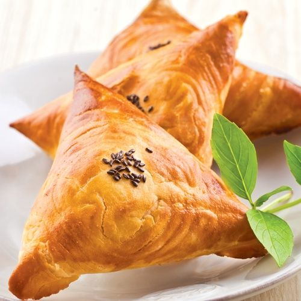

Echpochmak

Echpochmak, or little triangle pie is a tatar national dish.
Echpochmak is a traditional tatar cuisine made of fresh or yeast dough, wrapped in
an envelope of triangular shape, with potato and meat filling in the chopped version.
Ingridients:
Dough:
- Milk - 150ml
- Flour - 400g
- Eggs - 1pc
- Sour cream - 85g
- Butter - 60g
- Sugar - 1tbsp
- Salt - 1 teaspoon
- Yeast - 18g
Filling:
- Lamb meat - 400g
- Potatoes - 100g
- Onions - 200g
- Black Pepper
- Cumin
- Salt - 1tbsp
- Butter - 150g